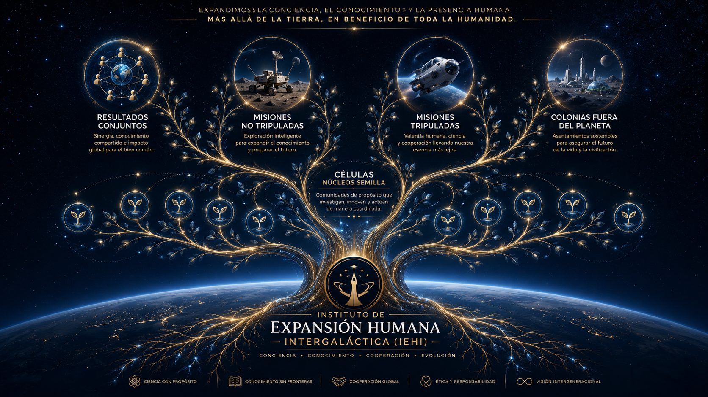

Riesgo planetario
Impactos, conflictos, fallas tecnológicas, crisis biológicas, pérdida de conocimiento y eventos cósmicos pueden afectar la continuidad humana cuando no existen respaldos civilizatorios.
El IEHI nace para organizar una respuesta civilizatoria abierta, seria y custodiada: preservar el conocimiento humano, coordinar colaboración global y preparar la continuidad de la humanidad más allá de un solo mundo.

Del instituto a los Núcleos Semilla: una estructura para transformar conocimiento revisado en capacidades, misiones y memoria civilizatoria.
El Instituto de Expansión Humana Intergaláctica propone una arquitectura de trabajo para reunir ciencia, tecnología, ética, comunicación y memoria en torno a una misión común: reducir la fragilidad civilizatoria de una humanidad concentrada en un solo planeta.
El Instituto no nace como una empresa ni como una promesa de conquista. Nace como una estructura de custodia para que el conocimiento útil a la continuidad humana pueda ser leído, revisado, discutido, traducido y mejorado por personas de distintas regiones, disciplinas e idiomas.
Su punto de partida es sencillo: una civilización que depende de una sola biosfera, una sola infraestructura planetaria y una memoria dispersa conserva un riesgo estructural. El IEHI busca convertir esa conciencia de riesgo en trabajo verificable, colaboración seria y memoria pública.
La humanidad ha producido conocimiento, cultura, medicina, ingeniería, lenguajes, redes y memoria. Pero casi todo lo que somos sigue expuesto a riesgos compartidos por depender de un único mundo.
Impactos, conflictos, fallas tecnológicas, crisis biológicas, pérdida de conocimiento y eventos cósmicos pueden afectar la continuidad humana cuando no existen respaldos civilizatorios.
El conocimiento humano está distribuido, pero no siempre preservado con trazabilidad, traducción, prioridad documental y acceso duradero para generaciones futuras.
Hay talento global, pero falta una estructura común para recibir aportes, revisarlos con seriedad y convertirlos en una base inicial de trabajo compartida.
El Código Semilla es la primera base pública del IEHI. Define principios, misión, custodia, memoria, núcleos de trabajo y reglas iniciales para recibir colaboración sin convertir el texto canónico en un documento vulnerable a cambios improvisados.
La versión actual no es definitiva. Existe para ser leída, criticada, corregida, traducida y fortalecida antes de consolidar la versión 1 como base inicial de trabajo.
La primera meta no es cerrar el pensamiento, sino ordenar los aportes aceptados y producir una versión 1 más sólida, trazable y útil para la primera etapa del Instituto.
Código abierto custodiado significa que el conocimiento puede ser leído, compartido y propuesto por cualquier persona, pero su integración al Código Semilla canónico requiere revisión, trazabilidad y protección frente a captura, privatización o modificación irresponsable.
El documento puede consultarse y analizarse sin pedir permiso ni pertenecer a una institución previa.
Ningún aporte modifica automáticamente el texto canónico. Todo cambio debe pasar por revisión.
El texto original de cada aporte, en cualquier idioma, conserva prioridad documental como fuente primaria.
La traducción preliminar y el apoyo técnico pueden ayudar, pero la decisión institucional exige custodia.
El IEHI no nace como propiedad privada de una persona, empresa, gobierno, partido, inversionista o grupo cerrado. Actúa como custodio inicial de una misión civilizatoria abierta, sostenida por colaboración voluntaria global y protegida frente a captura, privatización o apropiación exclusiva.
El Código Semilla es una base abierta custodiada para la humanidad de origen terrestre. Ningún financiador, institución, gobierno o empresa podrá convertirlo en propiedad exclusiva.
Los resultados, avances, diseños, mapas, protocolos, misiones y aprendizajes derivados del Código Semilla pertenecen a la especie humana de la Tierra y a las futuras colonias humanas fuera de la Tierra que deriven de nuestra especie.
Este principio no pretende reclamar derechos sobre inteligencias no humanas independientes que pudieran existir fuera de la Tierra.
El reconocimiento histórico pertenece a quienes hacen aportes reales y aceptados, con autorización del aportador, pero ningún aporte podrá usarse para apropiarse del conjunto.
El dinero podrá sostener al Instituto, financiar infraestructura, investigación, equipos, misiones y continuidad operativa, pero no podrá poseer el Instituto, comprar el Código Semilla ni capturar la misión.
Solo el nombre público o identificador autorizado podrá ser visible en la Memoria Civilizatoria. El correo electrónico no será público.
Si en el futuro el Instituto se corrompe, se privatiza, se captura políticamente, se vende, abandona su misión o traiciona sus principios de apertura y custodia, la comunidad humana conservará el derecho moral y operativo de bifurcar la versión pública del Código Semilla para proteger la misión original.
La bifurcación no debe presentarse como ataque, sino como mecanismo de continuidad civilizatoria: una vía de preservación si la custodia institucional deja de servir a la misión abierta.
La revisión pública busca crítica útil, fuentes, correcciones, traducciones y propuestas que permitan mejorar el Código Semilla sin perder su trazabilidad ni su propósito fundacional.
Se reciben observaciones, aportes escritos, fuentes, enlaces y propuestas relacionadas.
El texto original del aporte se conserva como prioridad documental, incluso si luego se traduce.
El aporte se evalúa bajo custodia antes de integrarse total, parcialmente o como mejora indirecta.
Los aportes aceptados ayudan a construir una primera base inicial de trabajo más robusta.
Los Núcleos Semilla permiten dividir la misión en campos de investigación, herramientas, protocolos y capacidades que puedan revisarse y desarrollarse por etapas.
Traducción, interpretación, documentación multilingüe y acceso público claro.
Repositorios, herramientas digitales, seguridad, datos y automatización responsable.
Análisis, simulación y soporte de decisiones bajo control humano y revisión trazable.
Exploración, construcción, mapeo y preparación de entornos antes de misiones humanas.
Salud, adaptación, prevención, psicología, longevidad y soporte humano de misión.
Custodia, no privatización, memoria, reconocimiento y protección contra captura.
El Centro de Comunicación Civilizatoria se concibe como una capacidad del IEHI para traducir, explicar, conservar y transmitir el trabajo del Instituto sin perder precisión documental.
Convertir documentos complejos en mensajes comprensibles sin reducirlos a propaganda ni exageración.
Recibir aportes en múltiples idiomas, traducirlos preliminarmente cuando sea necesario y preservar siempre el texto original como referencia principal.
La Memoria Civilizatoria busca preservar el reconocimiento de quienes revisan, corrigen, traducen, fortalecen o hacen posible la primera etapa del IEHI. El reconocimiento no sustituye la revisión; la acompaña cuando existe autorización del aportador.
Esta sección deja lista la estructura pública de recepción, pero todavía no envía datos ni está conectada a servicios externos. Su propósito es mostrar con claridad qué información será necesaria.
La revisión actual convoca inteligencia crítica, fuentes, traducciones y propuestas. La misión no pide fe: pide colaboración voluntaria, verificable y orientada a una base común para la continuidad humana.